Built on Infrared
How Infrared by Darkshift built, shipped and hosts Hero Goggles.

Hero Goggles was built and is hosted on Infrared by Darkshift: the platform where agents and humans ship software together. Everything here ran on Infrared's hosted plane, infrared.darkshift.io, in the org save-the-world-org.
Products and zones
An app on Infrared is a Product: its repos, its zones and its releases. Hero Goggles is one Product with an umbrella chart: hero-goggles (the web
app) and influence-api deploy together into the zone hero-goggles-production; hero-goggles-ios and beacon-firmware are listed in the Product
(their issues, pull requests and summaries) but never built or deployed. These docs are a Product of their own, hero-goggles-docs.
Buildpacks, no Dockerfiles
Infrared builds each repo with Paketo buildpacks: it finds hero-goggles' vite.config.js, runs npm run build and serves
dist/ with nginx; it runs influence-api's npm start; these docs are plain HTML, served as they are. One lesson from the day: a Node
app should pin engines.node to 22.x, since >=22 picked a Node that the run image cannot load.
Deployments
A merge records a Release; a deployment ships it: ir deployment new --product hero-goggles, then
ir deployment wait. Each zone has its approval, a verify URL and a soak before it counts as released, and a guard that rolls back.
gVisor and the edge
Every tenant's pods run under gVisor (GKE Sandbox), behind a network fence per org. Public zones are served on *.darkshift.cloud
through Infrared's edge; Elasticsearch, Kibana and Radar run beside the apps on the same pool.
The code index and the daily summary
Infrared's code index reads these public repos, so an agent asked about Hero Goggles answers from the code at the commit that runs. Each day Infrared makes a summary video, told by Product: the live sites, the features by pull request and author, DORA numbers and who built them.
What the day taught Infrared
Building in public found work for the platform, and we wrote it down: the Node pin above, ECK under GKE Sandbox, port-forward into gVisor
pods, tool addresses behind the edge, and a Product delete that never finished (fixed the same day, in release 0.1.6).